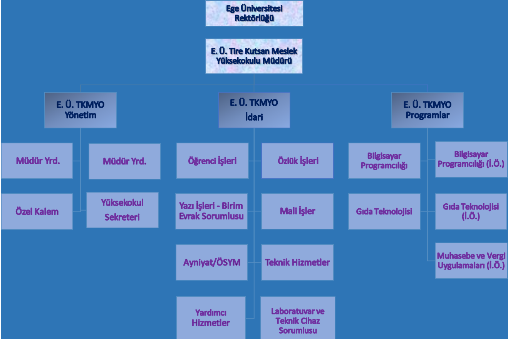

Tire Kutsan Meslek Yüksekokulu, Ege Üniversitesi'ne bağlı olarak "Tire
Meslek Yüksekokulu" adı ile İzmir'in Tire ilçesinde kurulmuş, 1998-1999
öğretim yılında ismi E.Ü. Tire Kutsan Meslek Yüksekokulu olarak
değiştirilmiştir.
Tire Kutsan Meslek Yüksekokulu kuruluşundan bugüne kadar, Tire ilçesine
eğitim-öğretim, sosyal ve kültürel anlamda katkılar yapmaya devam
etmektedir. Bu görevleri yanında yüksekokulun temel misyonu, evrensel
değerleri benimsemiş, disiplinli ve uyumlu bir çalışma ortamı içinde
kendi yapısını sürekli geliştirerek ülkenin gereksinim duyduğu nitelikli
ara insan gücünü yetiştirmek, sahip olduğu bilgi ve teknoloji birikimini
ülke hizmetine sunmaktır.
Eğitim-öğretim faaliyetlerine ilk olarak 1994-1995 öğretim yılında
'Bilgisayar Programcılığı' ve 'Gıda Teknolojisi' programları ile
başlamıştır. 2002-2003 öğretim yılında ise 'Muhasebe ve Vergi
Uygulamaları' programı (ikinci öğretim) açılmıştır. 2012-2013 öğretim
yılında Bilgisayar Programcılığı ve Gıda Teknolojisi programları ikinci
öğretim olarak da açılmıştır.
Eğitim - öğretim faaliyetleri; 1 adet konferans salonu, 3 adet
bilgisayar laboratuvarı, 1 adet çok amaçlı kimya laboratuvarı, 1 adet
mikrobiyoloji laboratuvarı, 1 adet temizlik odası, 1 adet cihaz
laboratuvarında sürdürülmektedir. Prof. Dr. Refet SAYGILI Bloku'nun
hizmete girmesiyle derslik sayısı 9’a yükselmiş ve eğitim sistemine 1
adet pilot tesis dahil edilmiştir. Tire Kutsan Meslek Yüksekokulu'nda
bulunan mevcut programlar (ikinci öğretim dahil) büyük oranda sınavsız
geçiş ile öğrenci almaktadır.
Meslek Yüksekokulundan mezun olan bilgisayar programcısı teknikerleri;
başta sanayi kuruluşları olmak üzere bilgisayar satış, yazılım ve teknik
destek firmaları, internet servis sağlayıcıları, bankalar, sigorta
şirketleri vb. firmalarda çalışabilmektedirler. Gıda Teknolojisi
programı mezunları ise, gıda üretimi yapan işletmelerin kalite kontrol
merkezlerinde, çevre koruma laboratuvarlarında, ayrıca Gıda, Tarım ve
Hayvancılık Bakanlığı Kontrol Laboratuvarı, Hıfzısıhha Enstitüsü,
belediyeler, İl Sağlık Müdürlüklerinde istihdam edilebilirler. Muhasebe
meslek elemanları ise mali müşavir ve yeminli mali müşavir bürolarında,
kamu ve özel işletmelerin muhasebe departmanlarında, denetim
şirketlerinde yardımcı eleman olarak çalışabilirler.
Önlisans eğitimlerini tamamlayan Muhasebe ve Vergi Uygulamaları programı
mezunları, programlarına uygun Açık Öğretim Fakültesi lisans
programlarına sınavsız kayıt yaptırarak ilgili lisans programının 3.
sınıfından eğitimlerine devam edebilirler. Meslek Yüksekokulumuzun diğer
programlarının mezunları ise, 1 yıl intibak derslerini aldıktan sonra
eğitimlerine istedikleri Açık Öğretim Fakültesi lisans programının 3.
sınıfından devam edebilirler. Ayrıca Meslek Yüksekokul mezunları, ÖSYM
tarafından her yıl açılan DGS-Dikey Geçiş Sınavı’na girerek kendi
branşlarında lisans programlarına kayıt yaptırarak lisans eğitimlerini
tamamlama hakkına sahiptirler.
Gelişen teknolojiye ayak uydurabilen, uluslararası standartlara uygun mesleki ve teknik bilgiye sahip, analitik ve yaratıcı düşünen, çözüm üretebilen, kamusal ve sosyal sorumluluğu önemseyen, milli ve manevi değerlerine bağlı nitelikli insan gücü yetiştirmektir.
Alanında öncü, uluslararası platformda aranan özelliklere sahip nitelikli elemanlar geliştiren, sanayi ile işbirliği içerisinde olan, eğitim kalitesi ile sürekli gelişim gösteren bir yükseköğretim kurumu olmaktır.

| Tarih | Ünvan Ad Soyad |
|---|---|
| 1994-1997 | Prof. Dr. Fikret İKİZ |
| 1997-1998 | Prof. Dr. Adnan ÜNLÜTÜRK |
| 1998-2001 | Prof. Dr. Hikmet HOŞSUCU |
| 2001-2004 | Prof. Dr. Osman ÖZDEN |
| 2004-2006 | Prof. Dr. Levent TOKER |
| 2006-2011 | Prof. Dr. M. Kürşat FIRAT |
| 2011-2016 | Prof. Dr. Harun Raşit UYSAL |
| 2016-2017 | Doç. Dr. Ahmet KAYA |
| 2017-2018 | Prof. Dr. Fikret PAZIR |
| 2018-2022 | Prof. Dr. Ahmet KAYA |
| 2022-2024 | Prof. Dr. Nur CEYHAN GÜVENSEN |